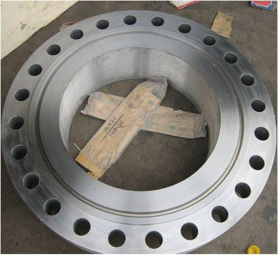

锻造法兰 锻造工艺过程一般由以下工序组成，即选取优质钢坯下料、加热、成形、锻后冷却。锻造的工艺方法有自由锻、模锻和胎膜锻。生产时，按锻件质量的大小，生产批量的多少选择不同的锻造方法。自由锻生产率低，加工余量大，但工具简单，通用性大，故被广泛用于锻造形状较简单的单件、小批生产的锻件。自由锻设备有空气锤、蒸汽-空气锤和水压机等，分别适合小、中和大型锻件的生产。模锻生产率高，操作简单，容易实现机械化和自动化。锻造法兰模锻件尺寸精度高，机械加工余量小，锻件的纤维组织分布更为合理，可进一步提高零件的使用寿命。锻造法兰自由锻的基本工序:自由锻造时，锻件的形状是通过一些基本变形工序将坯料逐步锻成的。自由锻造的基本工序有镦粗、拔长、冲孔、弯曲和切断等。镦粗 镦粗是对原坯料沿轴向锻打，使其高度减低、横截面增大的操作过程。这种工序常用于锻造齿轮坯和其他圆盘形类锻件。

锻造法兰镦粗分为全部镦粗和局部锻粗两种。拔长 拔长是使坯料的长度增加，截面减小的锻造工序，通常用来生产轴类件毛坯，锻造法兰如车床主轴、连杆等。冲孔 用冲子在坯料上冲出通孔或不通孔的锻造工序。弯曲 使坯料弯曲成一定角度或形状的锻造工序。扭转 使坯料的一部分相对另一部分旋转一定角度的锻造工序。切割 分割坯料或切除料头的锻造工序。
模锻全称为模型锻造，将加热后的坯料放置在固定于模锻设备上的锻模内锻造成形的。模锻的基本工序 模锻工艺过程:下料、加热、预锻、终锻、冲连皮、切边、调质、喷丸。常用工艺有镦粗、拔长，折弯、冲孔、成型。常用模锻设备 常用模锻设备有模锻锤、热模锻压力机、平锻机和摩擦压力机等。通俗地讲，锻造法兰质量更好，一般是通过模锻生产，晶体组织细密，强度高，当然价格也贵一些。无论是铸造法兰还是锻造法兰都属于法兰常用制造方法，看需要使用的部件的强度要求，如果要求不高，还可以选用车削制法兰。